Case de portfólio · produto, marketing e tecnologia
Reports de performance, editados na própria página.
Dois emuladores, PF e PJ, que transformam o report mensal de marketing numa página editável e num e-mail executivo pronto para o Outlook. Sem código, sem instalar nada.
Demonstração fictícia: este repositório utiliza imagens ilustrativas, campanhas fictícias, nomes demonstrativos e dados sintéticos exclusivamente para apresentar as funcionalidades do projeto. Nenhum dado exibido representa resultados reais, informações de clientes ou campanhas internas do Santander. Case independente, sem vínculo institucional nem endosso.
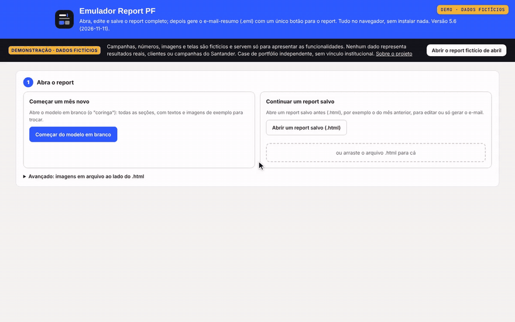
01 · O problema
Um report que precisava nascer de novo todo mês.
O report mensal contava campanhas, indicadores, peças, vídeos e aprendizados para quem decide. A mesma estrutura, com regras de marca, limites do Outlook, celular e dois segmentos. As dores abaixo estão documentadas no histórico do projeto; a intensidade de cada uma não foi medida.
Refeito todo mês
A mesma estrutura, atualizada a cada mês, com os mesmos passos.
Evidência: fluxo mensal documentadoEdição técnica
As primeiras versões eram HTML editado à mão.
Evidência: versões 1.x e 2.xMarca e Outlook
Regras de identidade e limites do e-mail para seguir sem apoio técnico.
Evidência: marca centralizada; guia do OutlookDois segmentos
PF e PJ, com identidades e seções diferentes, e um resumo executivo à parte.
Evidência: versões 5.0 a 5.4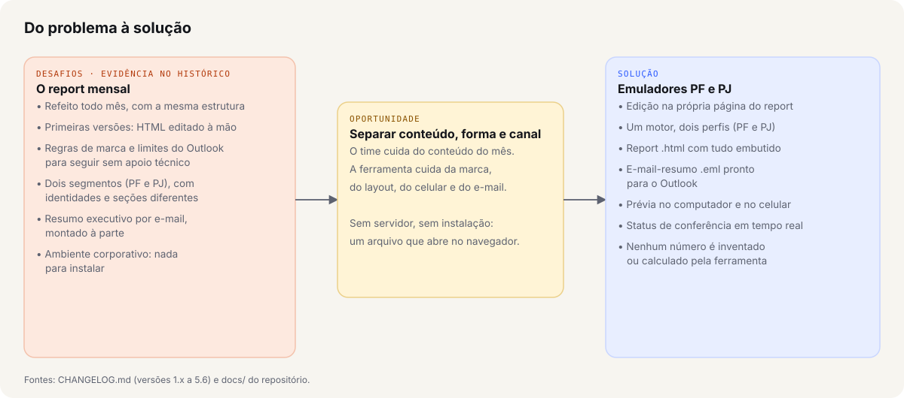
02 · A solução
Separar conteúdo, forma e canal.
O time cuida do que mudou no mês. A ferramenta cuida da marca, do layout, do celular e do e-mail. Tudo num arquivo que abre no navegador.
A página é o editor
Clicar e escrever. Barra do item para novo item, arrastar, mover, imagem, vídeo e link. Desfazer e Refazer.
Um arquivo de saída
O report vira um .html só, com imagens e vídeos dentro, que abre no computador e no celular.
E-mail executivo
Até 4 destaques escolhidos do report, prévia e status em tempo real, e um .eml que abre no Outlook.
Um motor, dois perfis
PF e PJ compartilham o código e mudam marca, seções e layout. Um não abre o report do outro.
Números confiáveis
A ferramenta não cria nem calcula número. Indicador sem dado fica oculto.
Sem instalação
Sem servidor, sem dependências, sem rede. Chrome ou Edge, dois cliques.
03 · Os dois ambientes
PF e PJ: o mesmo sistema, duas identidades.
Emulador Report PF
Página contínua
Lançamentos, qualidade criativa, laboratório, aprendizados, foco e agenda.
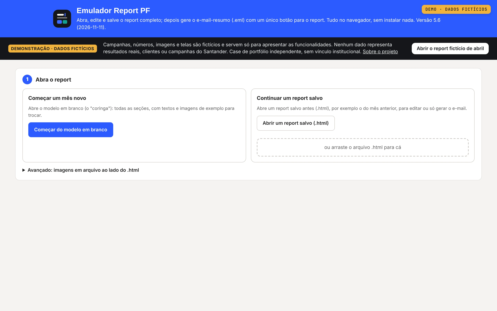
Emulador Report PJ
Layout com painéis
Campanhas, indicadores, análises, próximas iniciativas e funil nos principais resultados.
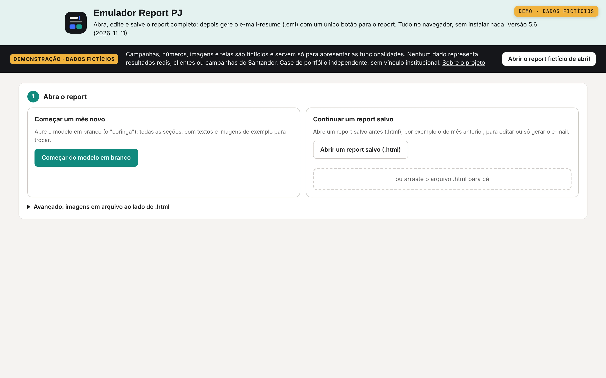
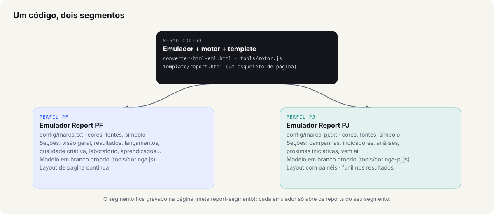
04 · Como funciona
O mês em sete passos.
- Abrirmodelo em branco ou report salvo
- Editarcampanhas, textos e números
- Organizarnovo item, arrastar, mover, seções
- Mídiaimagens, vídeos e links
- Conferircomputador e celular
- Salvarum .html, tudo embutido
- E-maildestaques e .eml
Edição
Clique e escreva
O período muda em todos os lugares; indicadores têm valor, nome, variação e referência; as etiquetas trocam de cor, saem e voltam.
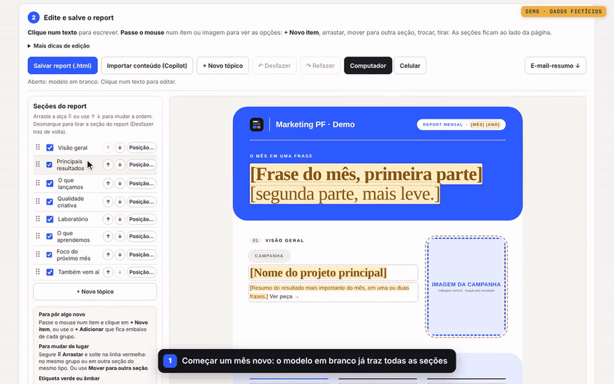
Organização
Pôr, mudar de lugar, mover
+ Novo item logo depois do atual, arrastar com linha de encaixe e mover para uma seção do mesmo tipo, sem quebrar a grade.
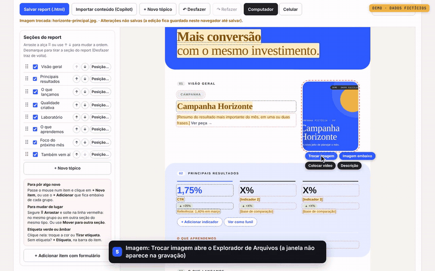
Comunicação
Do report ao e-mail
Até 4 destaques, prévia no computador e no celular, status em tempo real e o .eml pronto para o Outlook.
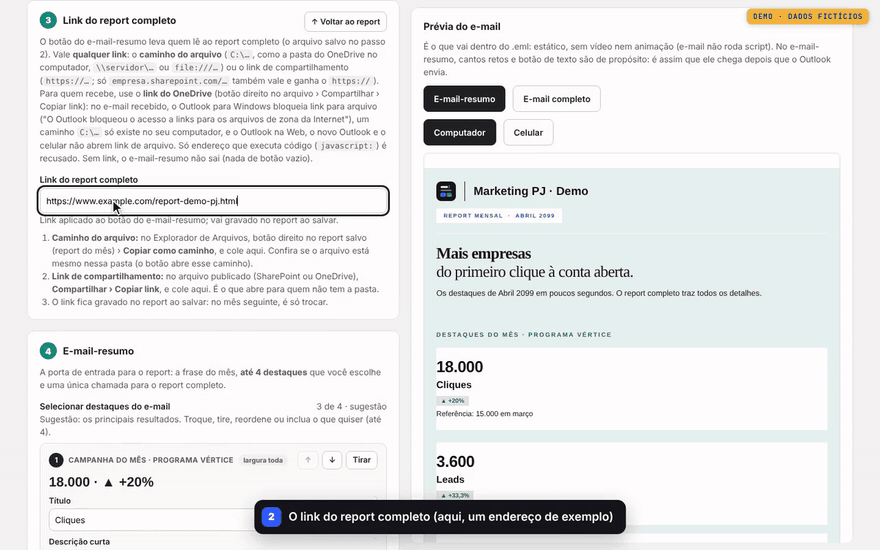
05 · Demonstrações
A ferramenta real, em funcionamento.
Gravações da interface com dados fictícios e legendas na tela. Sem áudio: dá para acompanhar só pelas legendas.
06 · Galeria
Cada momento da experiência.

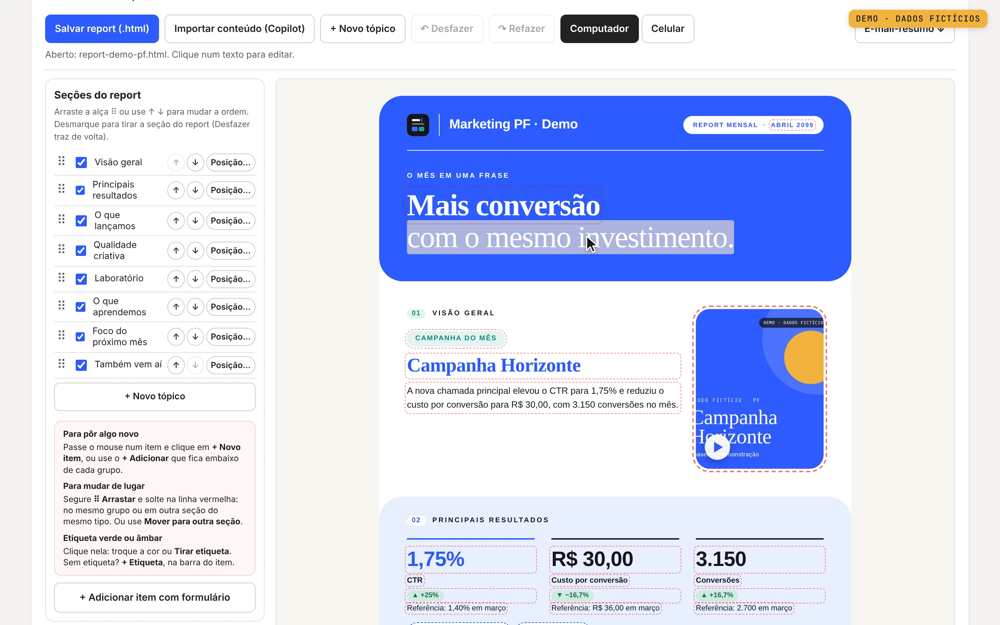

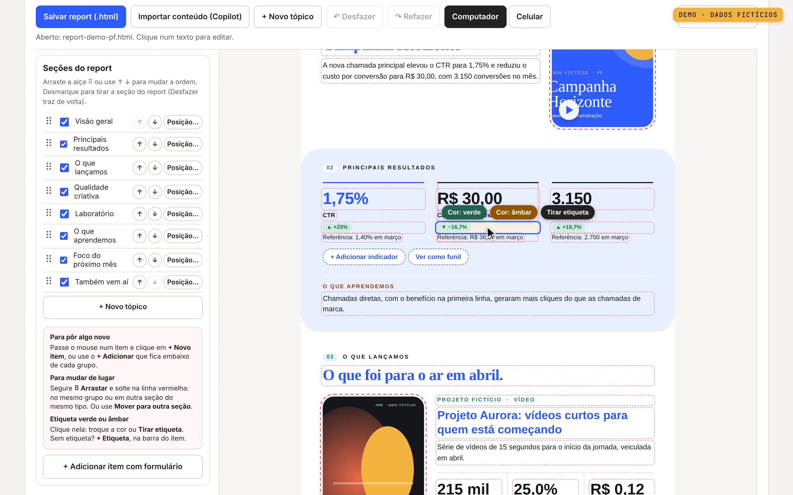

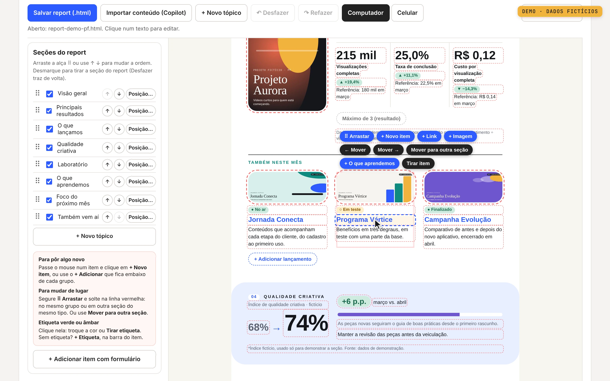

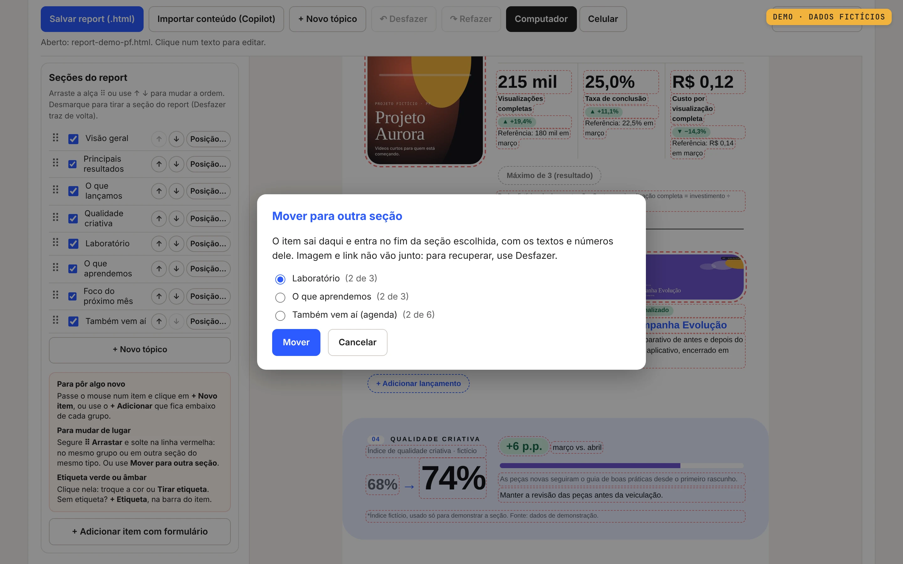

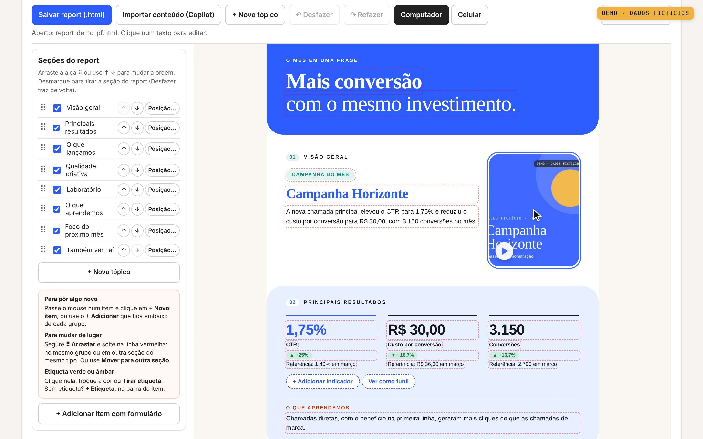

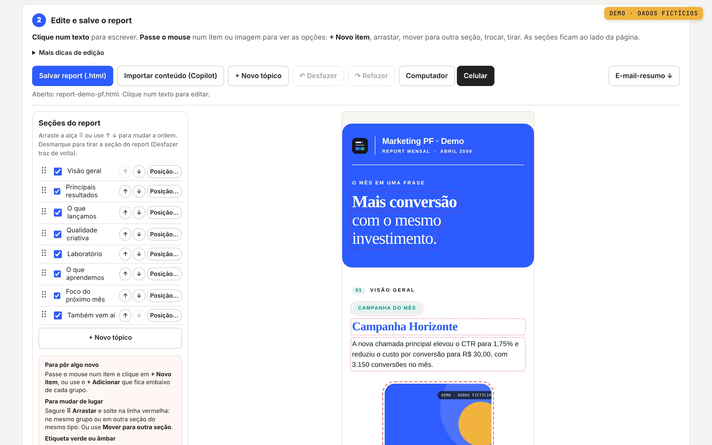
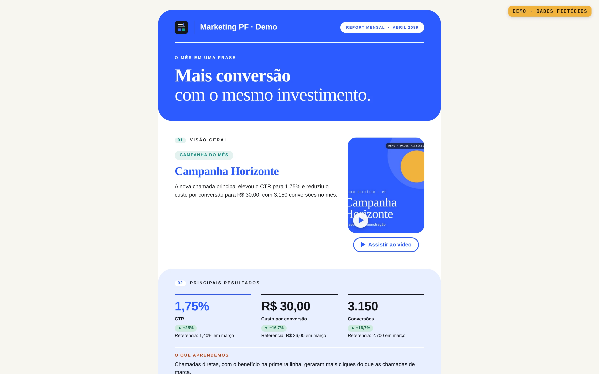

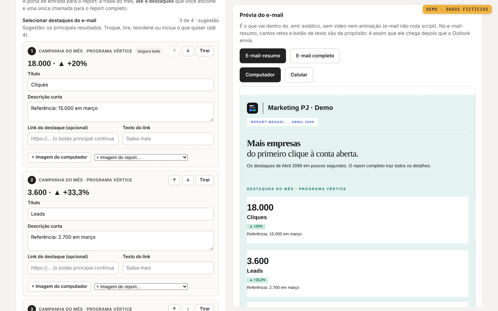

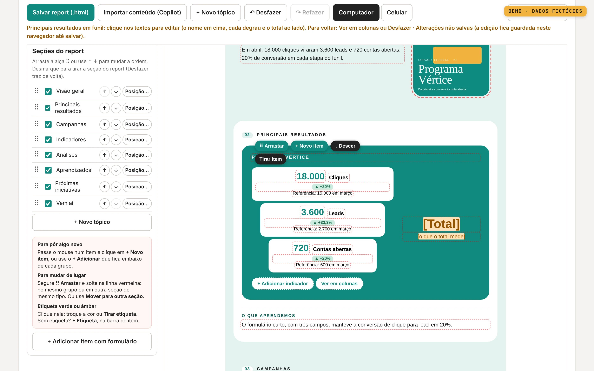
07 · Arquitetura
Tudo no navegador. Nada para hospedar.
A interface, o motor e os modelos em branco viajam juntos num único arquivo. A edição fica guardada no navegador até salvar. As saídas são arquivos: .html, .eml e .png. Não há servidor, banco de dados, API ou serviço externo.
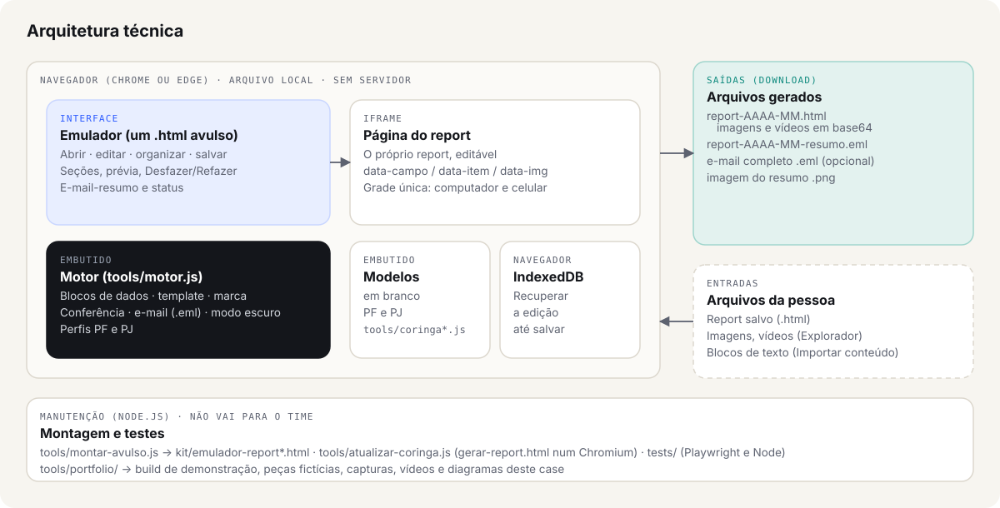
Tecnologias
HTML, CSS e JavaScript sem framework; contenteditable, Canvas, File API, IndexedDB, Web Worker; e-mail em HTML compatível com Outlook e MIME (.eml).
Qualidade
Testes de ponta a ponta (Playwright) e do motor (Node) nos dois emuladores; suíte completa verde na versão 5.6.
Evolução
42 entradas de versão em cerca de seis semanas: do HTML à mão ao emulador no centro da operação e ao segmento PJ.
08 · Minha contribuição
Do problema ao produto.
Conduzi o projeto como dono do produto: identifiquei a oportunidade, defini requisitos e regras, desenhei a experiência de edição para quem não é técnico e evoluí a solução versão a versão a partir do uso real. Construí a ferramenta com apoio de IA generativa (Claude Code), definindo critérios, revisando e validando cada entrega.
Detalhes e evidências da contribuição (documento em Markdown) →